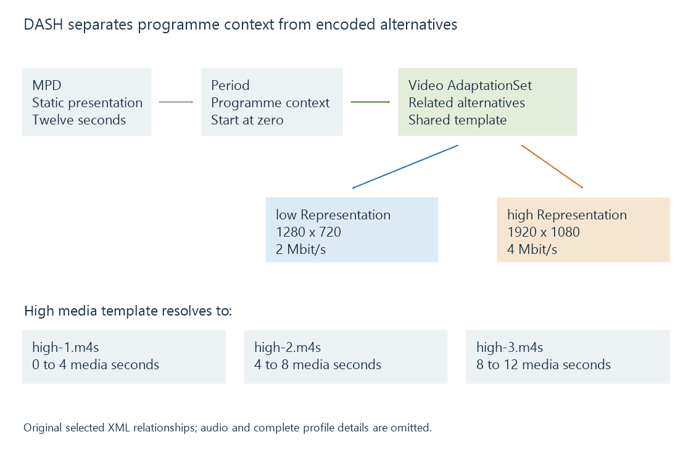

MPEG-DASH and its media presentation description
MPEG-DASH describes timed media representations and their addressable segments in a Media Presentation Description that a player uses for HTTP delivery and adaptation.
MPEG-DASH describes a media presentation that a player can retrieve over HTTP. Its Media Presentation Description, or MPD, identifies timing, available tracks and representations, and how to locate their media segments.
DASH is a delivery and presentation-description system. “DASH” on its own does not name a video codec, a DRM system or an Emby playback mode.
The presentation hierarchy
Three useful levels organize the media:
| Level | Role in the presentation |
|---|---|
| Period | A programme interval with its own presentation context |
| AdaptationSet | A group of related media alternatives, such as a video group or an audio-language group |
| Representation | A particular encoded alternative within that group |
A video AdaptationSet can offer different rates or dimensions for corresponding content. An audio AdaptationSet can represent a separate selected track. The player combines the suitable selected components on the intended timeline.

Several Periods can describe consecutive programme contexts. They are not necessarily just “the low, medium and high versions”: those alternatives belong at a different level.
A template resolves resource names
This original selected XML excerpt describes a twelve-second static video presentation with two representations and four-second media intervals:
<MPD xmlns="urn:mpeg:dash:schema:mpd:2011"
type="static" minBufferTime="PT1.5S"
mediaPresentationDuration="PT12S">
<Period start="PT0S">
<AdaptationSet contentType="video" mimeType="video/mp4">
<SegmentTemplate timescale="1000" duration="4000" startNumber="1"
initialization="init-$RepresentationID$.mp4"
media="$RepresentationID$-$Number$.m4s" />
<Representation id="low" bandwidth="2000000"
width="1280" height="720" codecs="avc1.4d401f" />
<Representation id="high" bandwidth="4000000"
width="1920" height="1080" codecs="avc1.640028" />
</AdaptationSet>
</Period>
</MPD>
The fictitious resources and omitted audio/profile details make this an addressing example, not a complete validated streaming package.
timescale="1000" gives the template duration a unit of one thousand ticks per second. Therefore duration="4000" means four seconds, not four thousand seconds.
For the high representation, initialization resolves to init-high.mp4. With startNumber="1", the first three media names are high-1.m4s, high-2.m4s and high-3.m4s. In this simple zero-origin example they cover 0–4, 4–8 and 8–12 seconds.
The bandwidth values describe representations. They do not give the network speed that a particular viewer will obtain when requesting those resources.
Sample time needs a presentation mapping
Other presentations use explicit segment timelines and nonzero sample origins. A raw timestamp then needs its timescale and offset before it becomes a programme position.
For an original conversion exercise, assume:
- Period start: 20 programme seconds.
- Sample timestamp: 900,000 ticks.
- Presentation time offset: 450,000 ticks.
- Timescale: 90,000 ticks per second.
Time within Period = (900000 - 450000) / 90000 = 5 seconds
Programme position = 20 + 5 = 25 seconds
The sample value alone represents ten seconds in its raw unit. Treating that as the final programme position would miss both the offset and the Period start.
The public DASH-IF timing guideline develops these relationships under its stated restricted interoperability model. It is a 2024 snapshot of implementation guidance, separate from the full ISO standard.
Static and dynamic presentations expose different availability
A static MPD describes a bounded presentation. A dynamic MPD can describe media becoming available as time advances, with a moving availability window and updated presentation information.
For live delivery, a locator is useful only while the resource is available. Wall-clock mapping, the publication window and the player's intended delay from live all affect which interval it should request. Live streams and on-demand streams develops those viewing consequences.
The MPD supplies information for adaptation, but the player supplies the selection policy. Two DASH players can choose differently from the same offered representations because their estimators, buffer states or device constraints differ.
See Also
- HTTP Live Streaming (HLS)
- Common Media Application Format (CMAF)
- Adaptive bitrate streaming and representation selection
- Live streams and on-demand streams
- Stream discontinuities and timeline changes
- Media Source Extensions (MSE) and scripted media delivery